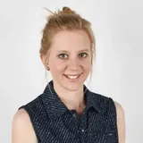
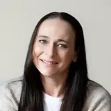

Ein respektvoller, ressourcenorientierter Umgang mit dem Thema.
Die Fortbildung hat mich fachlich und persönlich sehr bereichert. Ich habe ein tieferes Verständnis für Menschen im Autismus-Spektrum und viele Denkanstöße für meinen pädagogischen Blick gewonnen. Besonders die praxisnahen Beispiele nehme ich mit – ich würde es jederzeit wieder machen.
Wertvolle und vor allem wertschätzende Tipps.
Es war wirklich eine ganz tolle Fortbildung mit wertvollen, vor allem wertschätzenden Tipps. Auch die Lernplattform und die Community haben mich begeistert. Als Erzieherin und Inklusionsfachkraft in einer Kita werde ich auf jeden Fall weiterhin an den Praxis-Stammtischen teilnehmen. Absolut verdiente 5 Sterne!
Nicht Druck verändert Verhalten, sondern Verständnis und Beziehung.
Als Pädagoge und Vater eines Kindes mit AD(H)S kannte ich vieles bereits – trotzdem hat mir die Fortbildung einen völlig neuen Blick eröffnet. Das Gelernte konnte ich sofort im Familienalltag umsetzen. Meine wichtigste Erkenntnis: Nicht Druck verändert Verhalten, sondern Verständnis und Beziehung.
Flexibel, praxisnah und fachlich auf höchstem Niveau.
Die Fortbildung war sehr gut strukturiert. Besonders geschätzt habe ich, die Videos im eigenen Tempo bearbeiten zu können – wunderbar in meinen Berufsalltag integrierbar. Das Expertenwissen wird verständlich vermittelt, und die Praxis-Stammtische zur Fallbesprechung sind eine echte Bereicherung.

JuliaVolksschullehrerin
Sofort umsetzbar – und goldwert.
Die Fortbildung beinhaltet immens viel Wissen, bedacht aufgeteilt. Vieles konnte ich mir aneignen und gleich anwenden – das hat mir einen großen Handlungsspielraum in der Begleitung von Autist:innen eröffnet. Besonders hervorzuheben sind Ennos wohlwollende Haltung und seine Alltagsbeispiele; der lebenslange Zugriff ist unbezahlbar.
Direkt einsetzbar – auch in der tiergestützten Arbeit.
Eine sehr informative und praxisnahe Fortbildung, die mir großen Spaß gemacht hat. Sie hat meine Sichtweise und Haltung gegenüber Menschen im Autismus-Spektrum nachhaltig verändert. Besonders bereichernd sind die regelmäßigen Praxis-Stammtische mit ihren Fallbeispielen – sie runden das Angebot perfekt ab.
Professionell, effektiv und netzwerkorientiert
Ich habe schon viele Fortbildungen gemacht, keine war so gut strukturiert wie diese. Die Möglichkeit, alle Inhalte im eigenen Tempo zu erarbeiten und bei eventuell aufkommenden Fragen jederzeit bei den Stammtischen Antworten erhalten zu können erachte ich als ideal für wirklich jede/n.

StefanieHeilpädagogin
Hat mich in meiner Arbeit als Heilpädagogin sehr bestärkt.
Die Fortbildung „Autismus-Pädagogik“ hat mich in meiner Arbeit als Heilpädagogin sehr bestärkt. Ich konnte viele Themen nochmals vertiefen, aber auch Neues dazulernen. In den Live Calls fühlte man sich immer sehr gut begleitet und professionell beraten.
Genau das Richtige – Gelerntes direkt anwenden.
Die Fortbildung ist für mich genau richtig. Ich kann alle Inhalte in meinem eigenen Tempo lernen, was perfekt zu meinem Alltag als Integrationslehrerin passt. Das Gelernte lässt sich direkt in der Praxis anwenden.
Fachlich wie persönlich gestärkt.
Besonders wertvoll war, dass ich mein Lerntempo selbst bestimmen konnte. Der Austausch in der Gruppe ermöglicht neue Perspektiven und gemeinsame Reflexion. Insgesamt fühle ich mich durch die Ausbildung fachlich wie persönlich gestärkt.
Praxisnahe Hilfen für den Schulalltag.
Als Sonderschullehrerin ist die Fortbildung sehr hilfreich. Die vielen Inputs und praxisnahen Hilfestellungen lassen sich leicht in den Schulalltag integrieren. Die Lerninhalte und Live Calls sind sehr flexibel aufgebaut und gut umsetzbar.
Eine echte Bereicherung – flexibel und praxisnah.
Das flexible Format ermöglicht es mir, die Inhalte in meinem eigenen Tempo zu erarbeiten. Besonders wertvoll sind die Fallbesprechungen und der wertschätzende Umgang. Ennos Praxiserfahrung hat die Fortbildung zu einer echten Bereicherung gemacht.
Individuelles Lerntempo, klar verständliche Inhalte.
Die Fortbildung war sehr wertvoll. Am hilfreichsten war für mich, dass das Tempo individuell anpassbar ist und die Lerninhalte klar und verständlich aufbereitet sind.
Ein echter Augenöffner – praxisnah und fachlich fundiert.
Die Fortbildung hat mein Verständnis für Autismus deutlich vertieft und mir viele praxisnahe Impulse für meine Arbeit als Beratungs- und Förderlehrkraft gegeben. Besonders das Modul „Komorbiditäten und herausforderndes Verhalten“ hat mir neue Perspektiven eröffnet. Die Schritt-für-Schritt-Struktur hilft, das Wissen systematisch aufzubauen und mit dem eigenen Erfahrungsschatz abzugleichen.